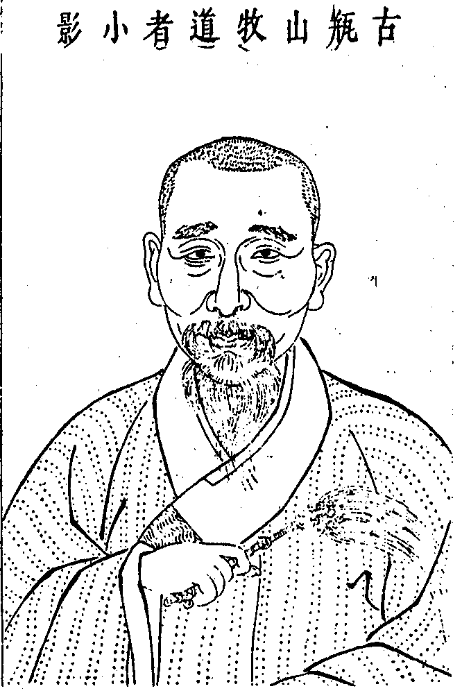
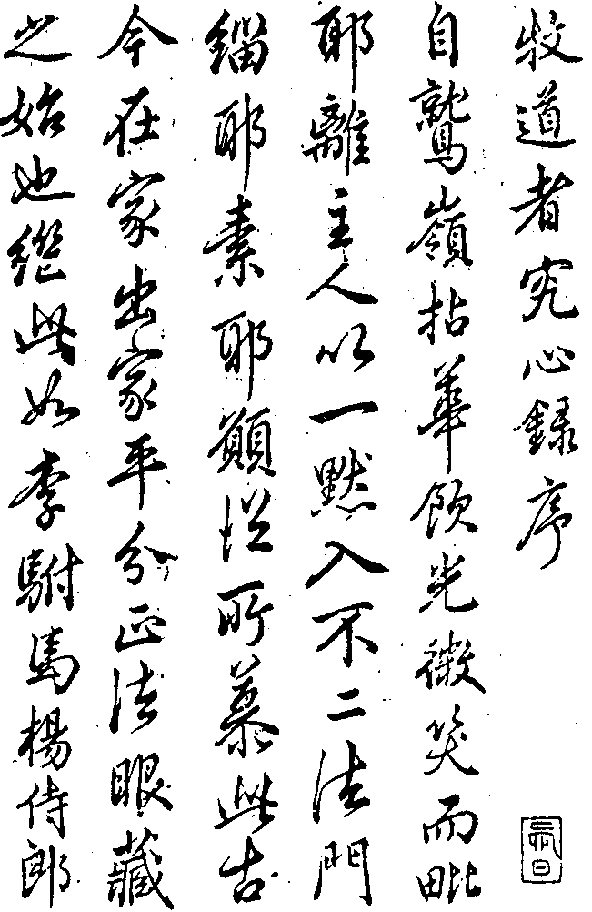
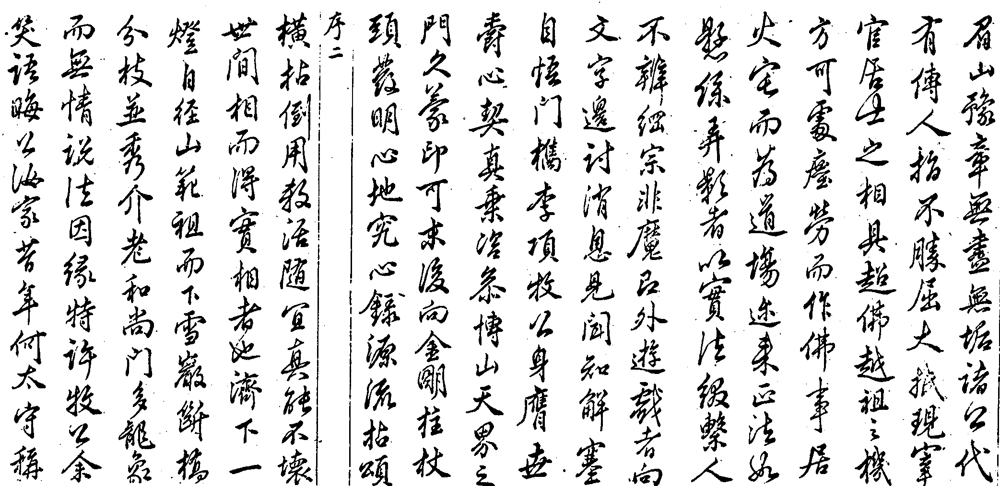
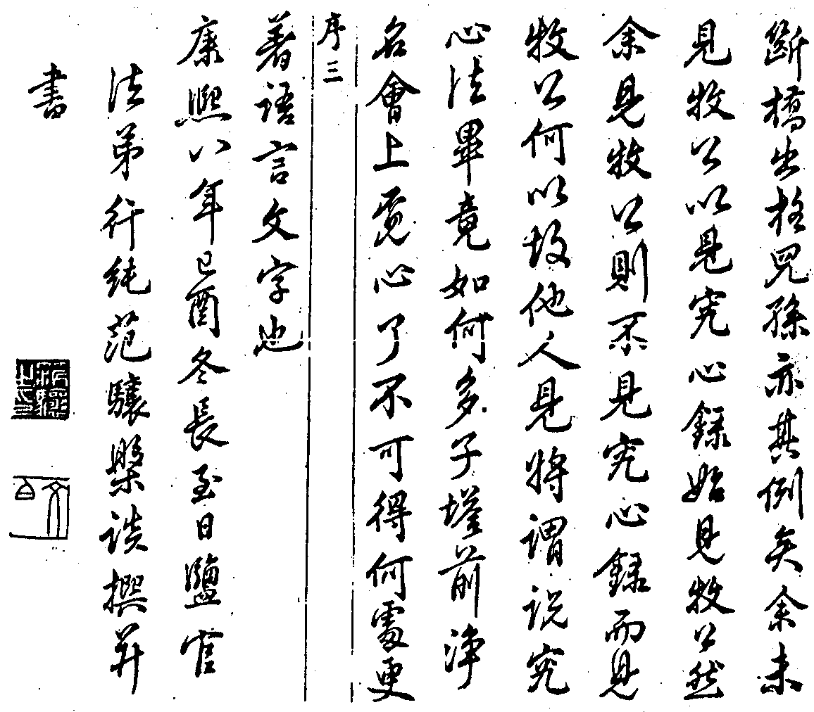

嘉興大藏經 第28冊
No.B207 古瓶山牧道者究心錄 (3卷)
【明 真本說 機峻等編】
第 1 卷
古瓶山牧道者小影

自題
只這觜臉迥沒回互上無攀仰一無所慕下絕己躬一無所妒道僧不僧道俗不俗有時孤峰頂上獨宿有時十字街頭接人有時遊戲金馬門有時蹴踏青獅窟深深處佛聖難窺密密處魔外罔測話未問時當頭截腳未跨時劈面喝豎起吹毛凜凜貴圖眼中出屑疑似善慧甘贄之體裁卻如布袋普化之作用傳不傳之心印振丕振之綱宗經行坐臥道合其中波澄月現風虎雲龍(咄)。
古瓶山牧道者究心錄序
當夫十方虛空悉皆消隕之時誰能發真歸元通體徹悟倒用魔王印追大軍於藕絲孔中全提金翅威取毒龍於生死海底者乎若夫牧道者之遇介和尚也啐啄同時當陽囑付如鴻毛御順風如巨魚縱大壑自車溪一枝佛法為檇李五葉嫡傳者從此須臾咨決併擔齊挑矣牧道者之頌古詩偈橫說豎說也拈提祖案拂拭宗風如枯樹垂滋葳蕤妙葉如寒禽扇旭下上瓊音衝口信筆總在無可思議中謂之不曾道著一字一句可矣牧道者之轉一筋斗換一頭面也初當紱冕侍衛現生華冑簪纓既當陵谷滄桑應化黃堂綰綬究竟就威音王那畔聳身進十八變竿頭良由向上一著心到無心究到無究安到無安話到無話彌天識網不遮智慧燈匝地情濤不汩性命蒂仍還牧道者本來面目脫然三界外縱橫手眼於世出世間是所贊歎也。
牧道者究心錄序



古瓶山牧道者究心錄目次
自題
只這觜臉迥沒回互上無攀仰一無所慕下絕己躬一無所妒道僧不僧道俗不俗有時孤峰頂上獨宿有時十字街頭接人有時遊戲金馬門有時蹴踏青獅窟深深處佛聖難窺密密處魔外罔測話未問時當頭截腳未誇時劈面喝豎起吹毛凜凜貴圖眼中出屑疑似善慧甘贄之體裁卻如布袋普化之作用傳不傳之心印振丕振之綱宗經行坐臥道合其中波澄月現風虎雲龍(咄)。
附松石圖卷像贊
牧雲門和尚贊
折蘆庵裏曾相見此日卷中重對面分明只是項牧公胡然頂相看來變臨風捉塵愛談玄宦海生涯渾不羨牧得牛來性已馴悠然水草溪山遍交游半在青雲端憶同拜手黃金殿桃花流水自年年春風捲幙飛雙燕子規聲中呼客歸慇懃又聽黃鸝囀瓶山堂上坐題詩身世冷觀真露電
梧山牧老人草
覺浪盛和尚贊
飛蚊上鐵牛拍手笑無休一卷伏羲未畫一琴黃帝未調二豎天聾地啞贏得松石為儔杖人不合點破太洩牧公風流
戊戌佛降誕日皋亭浪杖人盛題
本師和尚贊
裴休請黃蘗安名長髭求南嶽點眼今日牧公乞金明題像者三箇漢不論是緇是素好與三十拄杖何故[妳-女+口]松下石邊橋流水響
一初元和尚贊
德超勳貴行壓張王手拈麈拂力挽頹綱傳臨濟正宗兮明同杲日賡蠡湖曲調兮聲徹諸方牧法姪勿囊藏搭起袈裟鐵脊梁從教嫩桂永昌昌
此牧公親翁迺項襄毅公冢孫為大金吾蘭齋公哲嗣值滄桑而攖奇難去世爵而守清漳全活輯寧奏最解綬釋瑞鵲之宦署返端本之。
賜廳夙契宗乘徹圓智證得天界金明之入室衣拂淵源合儒禪祖印之嫡傳箕裘超邁說偈迭揚於緇素賡歌蚤溢於甘棠。
揮麈科頭處翛翛松菊林勳銘丁令鶴禪契子牙琴風月傳衣偈雲霞說項吟縹緗貽玉樹身世越當今
東皋譚貞默
此老面似生鐵之堅硬心如皓月之圓明兀坐於片石巖傍而樂四時景況放懷於長松樹下而觀萬物性情噫無形之形兮本不可形無名之名兮本不可名愚又豈肯矢上加尖而點污吾兄清白之家聲
匡山五乳同門弟笑雲旭
謝塵容而處巖谷逍遙乎方袍頭禿若非道氣與高懷曷為乎三徑清風肅肅
硯民褚廷琯題
淵明境界摩詰胸中逃儒歸釋信解無窮法眼視之知是肉身羅漢眷屬相看還喚牧公牧公
一味道人同門真覺贊
治中別駕淹其才白石清泉寫其趣游神乎天而天為之縱馳譽乎世而世為之遇目炯炯若巖下電胸英英若澤中澍襄毅履傳君能右步公保符懸君能左顧嘯傲金紫間蕭散瞿曇附拈花喻風旛之義夢槐醒冰輪之路棒喝嘻嘻絲綸注注咦斯牧翁者乃竺乾之彌雲閥閱之時雨出則為巨鼎以調羹止則馭三車而飲乳
世通家小弟駱雲程題
羨君不與世同流一種清姿品自修卸脫簪纓償夙志提持麈拂豎弘猷寰中未願酬人識物外寧甘任獨幽矯矯生平誰得似尋來知己許相投
同門法弟真鑒贊
大哉居士閱世出世機眼盡空反為聲勢高坐長松不談真諦目曠神怡追風良驥
新安同門弟真璨贊
有大居士曰維牧翁現宰官身示比丘容七橫八豎游戲虛空裴公德望龐老高風各各長篇短什雖極力贊歎而又何足以盡公
通家教弟施博拜題
怡神天際外所向不遺蹤金明親指顧動靜悉從容
龍淵同門弟圓法題
千載高名羨釣臺拂衣中歲賦歸來溪邊早證文忠偈堂上曾聞清獻雷白麈橫拈風卓朔烏藤倒卓座崔嵬每懷法道今寥落全賴渠儂力挽回
同門法弟真炯贊
個漢經文緯武鐵骨稜稜謂是宮保襄毅公七世孫嗣爵執金吾臨政治民底賢宰官卻被他換卻眼睛謂是傳臨濟正宗三十二世嗣法金明底大居士亦被他換卻眼睛即謂世出世間摸他不著佛祖位中籠他不住茶煙鶴舞漏泄家風水峙橋流知音有幾總被他換卻眼睛畢竟如何請向丹青繪不到處諸大善知識及學士先生贊歎不及處更須著眼咄又是一層
法弟羅開驎拜題
我夫子曰繪事後素且道未繪以前如何名目任尒僧繇也難描摹雖然如是不妨向筆尖頭上示宰官身現比丘相如月臨水隨緣應赴即今展卷覿面握麈尾而燕坐者又是阿誰咄元來是吾檇李法兄項公老牧
峽汜法弟田徹拜題
百年無為維君子恥百年有為道所戒止猗歟牧公有無為濟克紹厥家陸沉斯世曰仕曰隱綽有餘裕而貌屼然足以勝其所負而懷超然斯以表其所悟望如木雞龍象攸踞松石之間與我稅處翠竹黃花真照殊契是誠得乎精進之功匪徒有於游揚之譽予試品之以為托蓮社之劉遺民沉三航之龐安常也耶
雁湖弟蔣之翹拜題
巍然上品暫佐黃堂望隆丹嶼澤被清漳公餘適性山水為盟觀松示操翫石比貞攜琴與鶴舒卷雲煙快哉牧翁翩翩若僊功成名立歸而盤桓羲皇身際永矢弗諼
古勾寅弟王顯謨(漳州二府)
意欲買山隱徵圖帝眷賒庭閒驅五馬麈拂演三車駕鶴凌霜月攀虯踞晚霞任他逢處說談笑醉黃花
辛卯春古揚寅弟石瑋題(漳州司理)
坐覽丹霞勝清光入畫圖風流真別駕解脫類維摩官舍芝田鶴家山果下駒未須梅尉逸卷幔即蓬壺
華亭社弟周茂源(齎詔漳州)
怡神者壽食氣者仙維余叔氏湛止秋淵宦成漳海拂袖歸田五湖彭澤心寄霞巔聿光大吾前人之家乘振後起者之數十傳
侄景襄拜贊
新增像讚
木陳忞和尚贊
佛真法身猶若虛空墻壁匪礙廓落匪通五采莫繪萬象普融無間緇素盡具此宗歸根得旨名異實同嗟哉龐老孰躡芳蹤見賢思齊今茲牧公
玉林琇和尚贊
名臣之後以躬行聞於鄉復迴向空門珍重法道此世間全德人也王臣之囑受記靈山久矣
天目頭陀題
聞昔少年時便訪諸禪老久信人生浮去官寧不早所厭非榮華所戀非枯槁為盡平生懷心空事參討投機悟既深無情說偏好相證在逢人住山寧草草山中歲月長雲石盈幽抱閒坐果何為誰將是非考
同里弟王庭題
豈必林泉癖公餘自委蛇松濤喧茗具琴語隔溪花揮麈標群鹿科頭罷晚衙石床饒異卉鶴舞拂雲斜
西陵社弟戴京曾
以世間法為襄毅公象賢之昆以出世間法為斷橋倫滅法眼之孫錦繡場中掉臂而過阿梨樹下踞坐稱尊笑他護雪鵝兒成底事會看擘海取龍吞
鹽官法弟行純范驤拜題
僧非僧兮俗非俗三眼摩醯看不足風雷為舌語驚時雪玉在躬清可掬有時分虎符鯨海波平有時拈麈尾天魔膽肅法道垂秋袒肩續夫是之謂次庵長老瓶山老牧
法弟弘散拜題
金粟如來居士身和光混俗繼燃燈青獅忽現宰官相四海依然長老稱
胸襟流出蓋乾坤馬駒腳下遍兒孫但於善財巡禮偈當年豈例是沙門
後學道泰拜題
老漢生平作略太煞過人一頭遠繼瓶山七世之芳躅巍巍乎朝埜傳宣德政近紹蠡湖萬頃之洪波洋洋乎一肩橫荷宗猷栗棘金圈拋來擲去白笏紫綬全放全收更要人識伊面目倚松坐石突出雙眸今日撞著不肖兒孫一時洩漏蓋代之風流
嗣法門人機峻百拜敬題
古缾山牧道者傳
牧道者名謙字牧公嘉興府秀水人也先本姬姓堯之第六子封於項子孫以國為氏世居遼西漢時名萬金者為司徒遷洛陽進賢鄉垂稱項家巷後名晉者仕宋為大理評事當高宗南渡扈蹕僑居嘉禾之胥山孫名宏度號胥山居士墓在山麓有八一公碑是為嘉禾始祖孫名忠歷秩宮保諡襄毅勳著史冊牧道者七世祖也父俊卿大金吾左都督賜一品蟒服母沈氏誥封夫人公生於神宗丁巳臘月廿一日午時在妊母夢星殞懷及產腰有紫黑子七如北斗襁褓中見僧合掌微笑坐必跏趺童時淳實端恪不妄言笑遂通書史年十八居燕京專持准提神咒禮崇國寺洪慈法師覽心經及華嚴合論歎曰灼然在聖不增處凡不減輒了大意信知成佛真實不虛志慕空宗首謁博山余集生諸老命參生從何來死從何去話是時集生與公伯兄震緣事逮問在部每對榻橫塵公必侍立余撫公背謂震曰骨相志氣君家汗血駒也他日佩毗盧印據選佛場者非此子乎公再拜而退喜以自負從此孜孜兀兀以向上一著參究二十餘年礙膺不釋庚辰歲遵奉父命承廕金吾寅畏小心冤濫靡不昭雪未幾世亂甲申人日公夢山石崩飛潛身無地聞空中語曰但持吾咒爾難可免闖賊陷京公率家丁巷戰銛矛刺胸衣不受損徒步奔南屢遇暴不能害後張公完真陳公天章相繼總制浙閩公賴佛祖能仁啟迪從幕下克全萬萬生命兩公交章題授漳州別駕託以撫循公以慈力禁暴備荒申救冤抑保護甚眾蓋公為人襟懷空洞人莫測其涯涘望之有巖巖氣象靜也淵徹動也風行介然而不與易更確乎不可拔也豈非壁立萬仞令人見之意消而下視培塿丘垤似無足當其意者壬辰歲至福州見粵東華首空隱禪師師本分接人之暇亦贊念佛持咒蒙授准提懺像歸送楞嚴重梓流通一日禮懺口宣佛身充滿於法界普現一切群生前忽然身心脫落遂述偈曰一手拈磬一手鼓今日捉敗無位祖觸處逢渠本現成恒河沙國佛一母後參天界浪和尚浪曰聞你幼年見博山余集生諸公是否公禮曰今日特特禮拜和尚浪曰除卻搖唇鼓舌豎指揚眉處還我到家語來公又手默然浪頷之己亥春參金明介庵本師問涅槃心易曉差別智難明如何是差別智庵云差別且止喚甚是涅槃心公舉拳庵云死了燒了在甚麼處公纔開口庵震威便喝公從此冰釋又作十二時偈呈庵庵接過曰這個是紙墨還別有麼公展手視庵庵乃休又一日庵拈香墜問曰無情如何說法公曰和尚拄杖子[跳-兆+孛]跳去也庵復勘問公拈墜擲地乂手而立庵拾墜置于几公曰無情說法竟庵休去一日庵刻蜜蜂頌將竣庵曰病朽觀你蜂頌頓恰意但要問你日出扶桑大地紅是何意旨下一轉語可付諸梨棗公云適問箇是什麼庵哂之公即呈偈曰聊聞舉著便承當好肉無端已剜瘡著眼机先看端的頂門誰不帶扶桑庵印可之即出源流衣拂囑曰從上佛佛祖祖以自己所證遞相承襲今以授汝宜體佛祖之心為心以續慧命付以偈曰師子窟中事善哮吼者得今得本無得無得得亦得名曰真本別號次庵時年四十三矣嗣法為臨濟三十二世公嘗示門人曰法道不振由於趨競時緣扶豎宗風貴乎立志固守不圖人眾攢簇因緣輻輳為奇特當念念以法道為己任刻刻以後學失據為己憂古人單丁背米供眾五六人亦不廢晚參如應庵祖著艸鞋住院懶殘和尚寒涕垂膺四祖道信汾州無業芙蓉道楷諸大老休心息念斷絕攀援賜紫及號力陳遜謝豈非孤潔榜樣名垂千古何曾熱鬧亦何常營心時緣之得失所患道德之不充莫患時緣不就慎之勉之公之法言作略概可見矣以致九州四海傳稱次庵長老云有法嗣三人一名机峻號坦庵前住普光禪院後住淨心院二名机旃號慈林三名机[、/(、*、)]號獅王住妙喜山中。
古瓶山牧道者究心錄
八月望小參毘耶不二門百川應倒流法界不容身千聖覷不破截斷意根已成階級塞卻咽喉轉見周遮明明麗天皓月印長空明明匝地清風有何極淨裸裸赤灑灑全承者箇神力不在別處流轉但凡夫信不及奚得自輕而退屈所以有情則動轉施為無情則森羅顯煥縱使去來不以象動靜不以形猶未究竟如今瓶山拄杖指魚化龍點鐵成金更若不會化作無邊身菩薩十方各趣悉皆普現去也還見麼眾兄弟見則且置正當恁麼時一句作麼生良久云八月秋何處熱拽杖下座。
示眾溈嶺牧牛玄沙見虎無物堪比倫象骨輥毬禾山打鼓兩手相分付行棒行喝揭示妙淨明心拽石搬土顯露摩醯首眼從無住本建一切法運無功用辦一切事隨所作心應所知量透過關者掉臂而行未透關者葛藤窠裏埋沒且道不涉形名一句如何通信一塵纔舉起全體現優曇卓杖下座。
示眾舉黃龍心禪師因黃山谷乞指徑截處龍曰秖如仲尼道二三子以我為隱乎吾無隱乎爾太史居常如何理論公擬對龍曰不是不是公迷悶不已一日侍龍山行時巖桂盛放龍曰聞木樨花香麼公曰聞龍曰吾無隱乎爾公釋然師曰黃龍與麼道秖解旁通話跡繞路指蹤猶未直捷瓶山今日掃除文字迥脫根塵為諸兄弟拈出具眼者辨取以拄杖卓一下曰還見麼白鷺下田千點雪黃鸝上樹一枝花。
示眾我有明珠一顆久被塵勞關鎖今朝塵盡光生照破山河萬朵眾兄弟一眼觀天兩腳踏地且道明珠在甚麼處良久云春在艸頭上王孫幾箇知。
示眾拈起拂子云者裏薦得猶是法身邊事直饒皓月行空湧沒自在也未夢見法身向上事須知有冰楞上走馬劍刃上翻身若識此人行腳事畢。
誕日示眾有物無形先天地生能為萬象主不逐四時凋諸兄弟什麼物恁麼奇特舉拂子云露。
付坦菴峻上座衣拂小參雞足峰前披坐大庾嶺上持來瓶山今日拈出事不獲己弗免從頭註破瓶山昔年初參博山得其毛次於海內參見三十餘員尊宿得其皮骨末後在金明上介下菴本師和尚處得其髓方敢承受此衣不欲囊藏和盤托出但此衣固非形相之可拘亦非情識所能測非獨伶俐仙陀看即有分便是諸佛出來也不敢正眼覷著今日撞著牙如劍樹口似血盆箇無面目漢汝在諸方參得的與我拋卻舉拂云向這裏道將一句來峻禮拜云金香爐下鐵崑崙師打一拂子云更須珍重遂付衣拂源流師復囑云試看黃梅七百僧信衣三鼓付盧能心心相印何緇素秖貴當人正眼明喝一喝下座。
示眾炎炎得意事一過輒生涼清真寂寞心愈久偏生味只貴見地穩實等閑豈曰平常遂舉扇曰若喚作扇子入地獄如箭射參。
示眾端本堂與諸人說法了也闊子松風濤滾滾與諸人說法了也柏樹子磊磊落落與諸人說法了也還委悉麼如其未委拈拄杖擲下曰向者裏薦取。
示眾舉南陽忠國師僧問如何是本身盧舍那國師云與我過淨瓶來僧將淨瓶到國師云卻安舊處著僧復問如何是本身盧舍那國師云古佛過去久矣師曰日上曉山黛青處處逢渠鳥音碎花影濃頭頭撞著凍河發燄何妨寒灰死火枯樹敷花豈論春前冬後南陽羅龍陷虎慣得其便這僧作家好與擊破淨瓶使國師懡[怡-台+羅]有分然據正眼看來國師只知量邊事不識這僧問頭遂起身立云國師在這裏本身在甚麼處大眾道道看。
示眾有相身中無相身情與無情共一真霜月凌空咸聖智何山松檜不青青久立珍重。
示眾未離兜率且喜一半已降王宮觸途成滯夜睹明星脫賺平人為母說法猶涉唇吻靈山拈花未免色塵迦葉破顏全呈管見瓶山與麼道還有與世尊出氣者麼遂喝一喝云出群須是英靈漢敵勝還他獅子兒便下座。
因事小參驀劄相逢無非正體擒縱卷舒不從他得到這裏獨步丹霄清風明月不妨打開庫藏運出自己家珍與佛與祖同德同仁竺乾維摩震旦華閑同拈同放乃至與龐蘊張無盡楊大年何密庵之輩同一機用同一境照更有何事其或知見不清行履不正未免被物所役直須一一透徹本有風光不墮凡聖緇素之所滯礙不隨聲色語默之所流轉淨裸裸赤灑灑全體與麼來全體與麼去豈不慶快也哉眾兄弟還委悉麼相逢盡道休官好林下何曾見一人。
示眾舉臨濟大師云一喝分賓主照用一時行師拍膝一下云且道是賓耶主耶照耶用耶還會麼域中無向背閫外有威權。
示眾云彩雲時復白錦樹曉還青浩歌聲自寂乾坤一草亭舉拂子云惟有這箇不屬諸數還有識得渠者麼師良久云你諸人在這裏覓甚麼碗便趁出。
示眾舉溈山示眾云老僧百年後向山下作一頭水牯牛左脅下書五字曰溈山僧某甲當恁麼時喚作溈山僧又是水牯牛喚作水牯牛又是溈山僧畢竟喚作什麼即得仰山禮拜而退師曰溈山何異蝦為子曲仰山大似證龜作鱉各領三十棒若問瓶山畢竟喚作什麼劈手披胸云吽吽且道與古人是同是別。
示眾舉止承渠力從緣尋舊蹊方春荷鈍钁日暮還灌畦箇中無限意端的有誰知時有僧出問云應如是住如是降伏其心其心降伏不住時如何師厲聲云是誰降伏。
示眾拈起拄杖云若不患盲一切俱見卓杖一下云若不患聾一切皆聞若果聞果見世出世間打成一片正偏回互賓主歷然坐斷一切差別初無動搖如大日輪舉無遺照縱使德山臨濟到來也須退身有分眾兄弟還會麼不是男兒多意氣只因曾踏上頭關喝一喝下座。
示眾缽盂拄杖轉大法輪露柱燈籠立地聽且道露柱燈籠聽箇什麼缽盂拄杖說甚麼法不可以缽盂拄杖昧卻露柱燈籠不可以露柱燈籠不明缽盂拄杖眾兄弟向這裏有箇會處露柱燈籠缽盂拄杖更無兩般脫或未然則佛句祖句賓主句翳然在目且道如何得洞徹玄旨聻本來成現事切忌亂承當。
示眾樹凋葉落體露金風如何說箇體露的道理拈起拄杖云青山高突兀白水響潺湲。
示眾欲知佛性義當觀時節因緣時節若至其理自彰即今是什麼時節秋色依依秋虫唧唧出門盡寒山對面無相識瓶山與麼道汝等作麼生喝一喝。
示眾舉金陵寶誌垂語云終日拈香擇火不知身是道場玄沙備別云終日拈香擇火不知真箇道場師云金陵已露葛藤玄沙重下註腳一對無孔鐵錘可中有箇恰好且道誰是恰好舉手擺云明破即不堪。
一日僧問圓頂方袍佛之所制聞居士戴髮而披衣傳法未審出自何典師曰汝何出言之厲得無輕詆先聖者歟余雖識淺無辨請以盧行者事可憑之悉載傳燈所述唐咸亨二年五祖開法黃梅有居士姓盧名惠能參謁五祖問曰汝自何來盧曰嶺南祖曰欲須何事盧曰惟求作佛祖曰嶺南人無佛性若為得佛盧曰人有南北佛性豈然遂令服勞杵臼之間後五祖告眾述偈機語冥符則衣法皆付時會下七百餘僧惟盧得旨三鼓祖告曰諸佛出世隨機大小而引導之遂有十地三乘頓漸等旨以為教門然以無上微玅秘密圓明真實正法眼藏付於大迦葉展轉傳授二十八世至達磨屆於此土得可大師承襲以至于今吾今悉付於汝汝可流布無令斷絕盧行者跪受衣法啟曰法則既受衣付何人祖曰昔達磨初至人未之信故傳衣以明法衣乃爭端止於汝身所謂受衣之人命如懸絲也且當遠隱俟時行化至儀鳳元年丙子正月八日盧寓法性寺風颺剎幡聞二僧對論盧以風幡非動動自心之句印宗法師竊聆邀徵風幡之義印宗執弟子禮乃告四眾曰今遇肉身菩薩指座下盧居士曰即此是也因請出所傳信衣悉令瞻禮至正月十五日會諸名德為之剃髮然付衣法在先圓頂在後若果有緇素分別則不應五祖付盧居士衣缽之典制并囑汝可流布無令斷絕之諄諄也明矣達磨四世孫華閑居士付法於曇邃禪師若干世又何密庵田素庵居士迺白雲度之子孫付法於和庵忠禪師若干世即西京尼道深乃芙蓉楷之嗣付法于奉聖才禪師若干世此出於少林佛祖世圖碑記班班可稽付衣表信傳法印心實無緇素相貌而繼紹也又明矣又不見世尊佛法付托國王大臣居士此非古今在家出家同得正法眼藏之標榜未常獨限於圓頂方袍也昔常不輕菩薩見人便禮拜曰吾不敢輕於汝等汝等皆當作佛況自唐迄今天下大宗匠咸出於盧行者之苗裔汝何詆厲如此更一人有名呼不得無位可安排若不識此人幸勿以居士而忽諸僧慚禮退。
機緣
問如何是藏身處沒蹤跡師云日落花無影如何是沒蹤跡處莫藏身師云風高樹有聲。
一日途中遇又寒兄敘寒溫畢又寒問如何是臨行一句師拱手曰請了相笑而別。
問法身是有相無相師喝曰是有是無。
問不離當處常湛然如何師云臥龍最怖碧潭清。
問如何是涅槃門師曰此去福城五里。
一僧譚及法門中事師曰者箇什麼所在說長道短適值茶次僧指卓案上大小鐘碗曰大小不齊是如何師曰一窯燒出相笑便行。
問如何是本來身師曰風吹日炙。
福嚴費和尚在嚴[車*度]轢處應供如念兄邀往舟中參謁次如念曰此公在福建漳州府出仕費問曰幾年上師曰庚寅七年費曰曾殺人麼師曰曾殺費曰殺多少師曰一切總殺費曰忽遇同氣連枝交友投分者作麼生師曰揀擇甚麼費曰怎不自殺師曰直無下刃處費大笑師便禮退。
問如何是祖師西來意師指爐曰張銅爐似金曰此意如何師曰霜風寒徹骨。
一日坦菴重參機語相投師問及參詢行實次晨呈行由師閱畢復索云還有麼坦云甚處猶少師即棒云不得放過。
士問樹凋葉落體露金風意旨作麼生師曰遍界不曾藏曰畢竟如何值童子邀請師曰瓶山騎佛殿領供去也士禮拜。
問那吒太子析肉還母析骨還父乃現本身為父母說法如何是本身師曰西風吹落葉萬樹盡皆秋。
一日坦菴上座作●[○@牛]○相云中有一○能殺能活能縱能奪未審是那一○請大人點出專使呈上師便扯破即以原封示之。
空諸法兄拈云坦公慣捋虎鬚一場漏逗瓶山正令雖行未免憐兒不覺醜空諸又不然待云請大人點出但向道且喜吾徒頭角已露看他怎生合煞并啟云前在方丈中讀尊錄見坦公呈四圓相請大人點出忍俊不禁謹述拈語呈似伏候賜棒次庵法兄猊座師開緘覽畢喚侍者將燈來侍者將燈至師便連封燒卻。
問忽來忽去時如何師曰長江競渡舟曰不來不去時如何師曰奇怪石頭獰似虎火燒松樹舞如龍。
僧問洞山好佛秖是無光作麼生師微笑曰意旨如何師曰笑中有刀僧禮拜師曰有眼如盲。